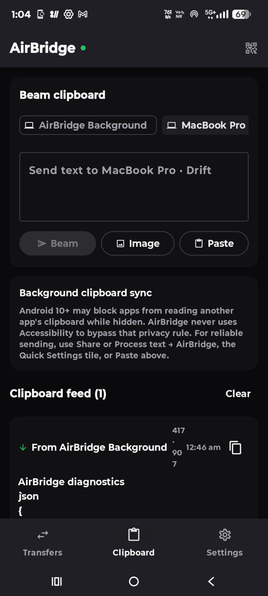

GUIDE CLIPBOARD SYNC
Clipboard sync between Android and your computer, without Accessibility workarounds
Universal Clipboard is an Apple-only feature, so copying a link on a phone and pasting it on a laptop usually means sending it to yourself. AirBridge carries clipboard text in both directions, photos from macOS to Android, and is explicit about the Android restrictions it will not bypass.

Why the clipboard stops at the phone’s edge
- Universal Clipboard requires Apple hardware and an Apple ID on both devices, so Android phones are excluded entirely.
- Sending it to yourself means an email draft or a chat thread, an upload, a search, and a stale copy left in the cloud.
- Vendor integrations are partial. Some manufacturer-and-PC combinations sync the clipboard, but only for those specific devices and bundled apps.
- Android 10+ restricts background clipboard reads. Apps cannot silently read another app’s clipboard while hidden, and the workarounds some tools use — Accessibility services or notification listeners — are exactly the permissions AirBridge refuses to request.
How AirBridge syncs the clipboard
A background peer runs inside the desktop companion and inside the Android foreground service, holding the same encrypted session used for file transfers. Neither needs a browser tab open.
- Computer → phone: copy text and, on macOS, copy a screenshot or photo; AirBridge captures it natively (macOS
NSPasteboardimage types) and delivers it to Android’s clipboard. Images up to about 5 MiB, text up to 256,000 characters. - Phone → computer: text travels both ways. On Android, send deliberately with Share → AirBridge, Process text → AirBridge, the Quick Settings tile, or the Paste button — or leave auto-beam on and let AirBridge capture what Android permits it to read.
- No echo loops: SHA-256 hashes of recent clipboard payloads suppress the item bouncing back and forth between the two devices.
- No gibberish: macOS image pasteboard types are inspected before anything is sent, so a copied photo arrives as a photo instead of a stream of scrambled bytes.
Every item is encrypted with the same AES-256-GCM session keys as file chunks. Nothing is routed through an AirBridge server, and clipboard content is not uploaded anywhere.
Android clipboard limits
- Automatic phone-side capture can be blocked by Android. If you copy text inside another app and AirBridge is in the background, the system may not let it read the clipboard. The reliable path is an explicit send: Share, Process text, the Quick Settings tile, or Paste in AirBridge. This is why AirBridge does not promise a seamless two-way mirror of every copy.
- No Accessibility service, no notification listener. Those permissions would make background capture easier and are deliberately absent; the Play-safe permission surface is documented in docs/PLAY_STORE_RELEASE.md.
- Password-manager clips are excluded. Payloads Android marks as sensitive are skipped rather than synced.
- Desktop clipboard images are macOS-only. On Windows the bridge uses the built-in PowerShell clipboard cmdlets and carries text; on Linux it uses
wl-clipboard(Wayland) orxclip/xsel(X11) and also carries text. Install one of those tools if the Linux bridge reports itself unsupported. - Size bounds: 512 KB of clipboard text is read per background capture on the desktop, 256,000 characters per clipboard message on the wire, and about 5 MiB per clipboard image.
Turn it on
macOS and Linux:
curl -fsSL https://raw.githubusercontent.com/DigantaDey/AirBridge/main/install.sh | bashWindows PowerShell:
powershell -ExecutionPolicy Bypass -Command "iwr https://raw.githubusercontent.com/DigantaDey/AirBridge/main/install.ps1 -UseBasicParsing | iex"Pair the Android app with the QR code, then open the clipboard tab on either side. Auto-beam copied text and Receive clipboard beams are separate switches, so you can choose one direction without enabling the other. If a device is untrusted, clipboard items are not delivered until you accept it.
What clipboard sync keeps private
Clipboard payloads are only decrypted on paired devices, and the history stays local — there is no clipboard account and no cloud sync. Received items can be cleared from the clipboard feed at any time. Read the privacy guide for the full model, including what an observer on the same network can still see.
Questions about this guide
Does clipboard sync work when the app or browser tab is closed?
Yes. The desktop companion runs a background peer that keeps the encrypted session, and the Android app uses its own foreground service for incoming items. The browser window is only the UI.
Why does copying text in another Android app not always sync automatically?
Android 10 and newer block hidden clipboard reads. AirBridge will not add an Accessibility service or notification listener to work around that rule, so use Share → AirBridge, Process text → AirBridge, the Quick Settings tile, or the Paste button for a deliberate send.
Can I sync clipboard photos on Windows or Linux?
Photo capture is implemented against macOS’s native pasteboard and is macOS-only. On Windows and Linux the desktop clipboard bridge carries text through the system clipboard tools.
Is clipboard content encrypted in transit?
Yes. Clipboard text and images use the same AES-256-GCM session keys as file chunks, over the paired, key-verified session. Nothing is written to an AirBridge server.